승강기기사 (2017-09-23 기출문제)
1과목: 승강기 개론
1. 견인비(Traction ratio)의 선정 방법은?
- 균형비 값은 커야 하고 무부하시와 전부하시의 값은 동일해야 한다.
- 균형비 값은 적어야 하고 무부하시와 전부하시의 값은 고려하지 않는다.
- 무부하시와 전부하시 값의 차를 크게 하고 그 값도 가능한 크게 한다.
- 무부하시와 전부하시의 값이 가능한 한 같도록하고 그 절대값이 적을수록 좋다.
(정답률: 80%)

2. 엘리베이터 주로프의 구비조건으로 틀린 것은?
- 구조적 신율이 적어야 한다.
- 내구성 및 내부식성이 우수하여야 한다.
- 로프 중심에 사용되는 심강의 경도가 높아야 한다.
- 강선 속의 탄소량을 크게 하여 유연성이 좋아야 한다.
(정답률: 73%)
3. 일종의 압력조절 밸브로서 회로의 압력이 설정 값에 도달하면 밸브를 열어 오일을 탱크로 돌려보냄으로써 압력이 과도하게 상승하는 것을 방지하는 밸브는?
- 체크밸브
- 차단밸브
- 릴리프 밸브
- 하강방향밸브
(정답률: 76%)
4. 완충기(BUFFER)에 대한 설명으로 틀린 것은? (단, gn은 중력가속도이다.)
- 카의 정격속도가 1m/s를 초과할 때에는 에너지 축적형 완충기를 사용한다.
- 에너지 분산형 완충기는 평균감속도 1gn이하로 카를 정지시켜야 한다.
- 에너지 분산형 완충기는 2.5gn를초과하는 감속도가 0.04초를 넘기지 않아야 한다.
- 에너지 분산형 완충기는 정격속도의 115%로 카가 충동하였을 때 카를 정지시켜야 한다.
(정답률: 65%)
5. 상부에 기계실이 있는 전기식 엘리베이터에서 기계실 안에 있는 장치가 아닌 것은?
- 권상기
- 조속기
- 제어반
- 급유기
(정답률: 86%)
6. 카틀에 부착되는 경사봉은 하중전달면에서 중요한 것으로 카바닥에 균등하게 분산된 하중의 얼마까지 카틀의 기둥에 전달하는가?
- 2/8
- 3/8
- 4/8
- 5/8
(정답률: 80%)
7. 지상면에서 탑승물까지의 높이가 2m이상으로 고저차가 2m미만의 궤조를 주행하고, 궤조의 구배는 완만하며 비교적 느린 속도로 주행하는 것은?
- 로터
- 관람차
- 해적선
- 모노레일
(정답률: 80%)
8. 엘리베이터용 가이드 레일을 설치하는 목적이 아닌 것은?
- 도르래의 회전을 카의 운동으로 전환
- 비상정치장치 작동 시 수직하중을 유지
- 카와 균형추의 승강로 평면내의 위치를 규제
- 카의 자중이나 화물에 의한 카의 기울어짐을 방지
(정답률: 77%)
9. 유압식엘리베이터에서 실린더와 체크벨브 또는 하강밸브 사이의 가요성 호스는 전 부하 압력 및 파열 압력과 관련하여 안전율이 얼마 이상이어야 하는가?
- 5
- 6
- 7
- 8
(정답률: 72%)
10. 엘리베이터의 정격속도를 증가시켰을 때 피트깊이를 단축하기 위하여 부착하는 장치는?
- 정지스위치
- 안전극한스위치
- 록다운 비상정지장치
- 종단층 강제감속장치
(정답률: 74%)
11. 엘리베이터의 배열에 관한 설명으로 틀린 것은?
- 3대의 그룹에 있어서는 일렬로 나란하게 배치하는 것이 바람직하다.
- 5대의 그룹에 있어서는 일렬로 나란하게 배치하는 것이 바람직하다.
- 6대의 그룹에 있어서는 3대 3으로 된 배열이 이상적이다.
- 8대의 그룹에 있어서는 4대 4로 된 배열이 이상적이다.
(정답률: 86%)
12. 다음 [보기]의 ㉠,㉡의 내용으로 옳은 것은?(관련 규정 개정전 문제로 여기서는 기존 정답인 4번을 누르면 정답 처리됩니다. 자세한 내용은 해설을 참고하세요.)
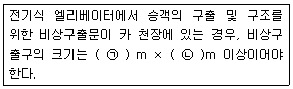
- ㉠ 0.20 ㉡ 0.4
- ㉠ 0.25 ㉡ 0.4
- ㉠ 0.30 ㉡ 0.5
- ㉠ 0.35 ㉡ 0.5
(정답률: 72%)
13. 유압식엘리베이터에서 유압장치의 보수, 점검 또는 수리 등을 할 때 주로 사용하기 위하여 설치하는 밸브는?
- 스톱밸브
- 체크밸브
- 안전밸브
- 제어밸브
(정답률: 77%)
14. 전기식엘리베이터에서 기계실내 구동기의 회전부품 위로 몇m 이상의 유효수직저리가 있어야 하는가?
- 0.1
- 0.2
- 0.3
- 0.4
(정답률: 73%)
15. VVVF 제어방식의 특징이 아닌 것은?
- 소비적력이 절감된다.
- 전원설비의 용량이 감소된다.
- 역률이 낮아 진상콘덴서를 설치해야 한다.
- 승차감이 교류 2단 속도제어에 비해 향상된다.
(정답률: 79%)
16. 카가 어떤 원인으로 최하층을 통과하여 피트에 도달하였을 때 카의 충격을 완화해주는 장치는?
- 완충기
- 조속기
- 브레이크
- 비상정지장치
(정답률: 86%)
17. 교류 2단 속도제어에서 가장 많이 사용되고 있는 속도비는?
- 2:1
- 3:1
- 4:1
- 6:1
(정답률: 81%)
18. 유입완충기의 반경(R)과 길이(L)의 비에 대한 관계식으로 옳은 것은?
- L ＞ 80 R
- L ≤ 80 R
- L ＞ 100 R
- L ≤ 100 R
(정답률: 76%)
19. 에스컬레이터의 디딤판의 크기에 대한 설명 중 옳은 것은?
- 디딤판의 주행방향 길이는 0.30m 이상이고, 디딤판과 디딤판의 높이는 0.24m 이하이여야 한다.
- 디딤판의 주행방향 길이는 0.30m 이상이고, 디딤판과 디딤판의 높이는 0.20m 이하이어야 한다.
- 디딤판만의 주행방향 길이는 0.38m 이상이고, 디딤판과 디딤판의 높이는 0.24m 이하이어야 한다.
- 디딤판의 주행방향 길이는 0.24m 이상이고, 디딤판과 디딤판의 높이는 0.38m 이하이어야 한다.
(정답률: 62%)
20. 엘리베이터 카 내의 비상조명등에 대한 설명으로 틀린 것은?(관련 규정 개정전 문제로 기존 정답은 1번입니다. 여기서는 1번을 누르면 정답 처리 됩니다. 자세한 내용은 해설을 참고하세요.)
- 엘리베이터 카 바닥면의 조도가 1lx 이상이어야 한다.
- 정전 등으로 주전원이 차단되었을 때 카내를 밝혀주는 것이 주목적이다.
- 안전에 직접적인 관련은 없지만 갇힌 승객의 심리적 안정을 도모하는 중요한 장치이다.
- 비상등의 유지시간은 갇혀 있는 사람의 구출시간을 고려해서 1시간 이상이어야 한다.
(정답률: 82%)
2과목: 승강기 설계
21. 파이널 리미트 스위치(final limit switch)의 설계에 대한 설명으로 틀린 것은?
- 카가 완충기에 도달한 후에 작동하도록 설계한다.
- 승강로 내부에 설치하고 카에 부착된 캠으로 동작시킨다.
- 카 또는 균형추가 완전히 압축된 완충기 위에 얹히기까지 작용을 계속하도록 한다.
- 카가 종단층을 통과한 뒤에는 전원이 권상 전동기로부터 자동적으로 차단되도록 한다.
(정답률: 76%)
22. 수평개폐식 승강장문의 닫힘을 저지하는데 필요한 힘은 몇 N이하여야 하는가?
- 100
- 150
- 200
- 300
(정답률: 68%)
23. 엘리베이터의 주행시간을 이루는 요소가 아닌 것은?
- 가속시간
- 감속시간
- 전속주행시간
- 슬립정지시간
(정답률: 73%)
24. 하중이 작용하는 방향에 의해 하중을 분류하였을 때 이에 해당되지 않는 것은?
- 정하중
- 인장하중
- 압축하중
- 전단하중
(정답률: 67%)
25. 변압기 용량을 산정할 때 교류 엘리베이터의 경우 전동기의 정격전류가 50A이하인 경우 전류값은 정격전류의 몇 배로 계산하는가?
- 1.1배
- 1.25배
- 1.5배
- 2배
(정답률: 65%)
26. 권상기 도르래와 로프의 미끄러짐 관계의 설명으로 옳은 것은?
- 권부각이 작을수록 미끄러지기 어렵다.
- 카의 가감속도가 클수록 미끄러지기 어렵다.
- 로프와 도르래 사이의 마찰계수가 클수록 미끄러지기 어렵다.
- 카측과 균형추측에 걸리는 중량비가 클수록 미끄러지기 어렵다.
(정답률: 73%)
27. 그림과 같은 로프식 엘리베이터의 로핑 방법으로 옳은 것은?
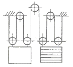
- 1:1 로핑
- 2:1 로핑
- 3:1 로핑
- 4:1 로핑
(정답률: 78%)
28. 엘리베이터 카자중이 1200kg, 정격하중 1000kg,승강행정 12m, 왕복회수 25회/h 일 때 유압식 엘리베이터의 발열량은 약 kcal/h인가?
- 3106
- 4260
- 5634
- 6652
(정답률: 30%)
29. 웜기어 감속기의 특징이 아닌 것은?
- 소음이 크다.
- 부하용량이 크다.
- 큰 감속비를 얻을 수 있다.
- 진입각이 작으면 효율이 낮다.
(정답률: 64%)
30. 와이어로프를 소선 강도에 따라서 작은 것부터 나열하고자 할 때 순서가 옳은 것은?
- A종 - B종 - E종 - G종
- G종 - E종 - A종 - B종
- B종 - A종 - G종 - E종
- E종 - G종 - A종 - B종
(정답률: 61%)
31. 직접식 유압엘리베이터의 하부 프레임에 걸리는 최대굽힘 모멘트가 24000 kgㆍcm 일때 프레임의 안전율은 약 얼마인가? (단, 프레임의 단면계수는 68cm3, 인장강도는 4100kg/cm2이다.)
- 5.9
- 6.4
- 10.4
- 11.6
(정답률: 43%)
32. 엘리베이터 승갈로 비상문의 크기는 어느 정도로 하여야 하는가?(관련 규정 개정전 문제로 여기서는 기존 정답인 4번을 누르면 정답 처리됩니다. 자세한 내용은 해설을 참고하세요.)
- 폭 : 0.45 이상, 높이 : 1.2m 이상
- 폭 : 0.45 이상, 높이 : 1.8m 이상
- 폭 : 0.35 이상, 높이 : 1.2m 이상
- 폭 : 0.35 이상, 높이 : 1.8m 이상
(정답률: 65%)
33. 속도 30m/min, 경사각 30°, 적재하중 1500kg,총효율 0.6, 승객 승입률 0.85인 에스컬레이터의 전동기 용량은 약 몇 kW인가?
- 5.2
- 6.2
- 7.2
- 8.2
(정답률: 38%)
34. 전기식엘리베이터 승강장 도어의 잠금장치(도어록)의 물림은 몇mm이상 물려야 하는가?
- 3
- 4
- 5
- 7
(정답률: 59%)
35. 60Hz, 4극 전동기의 슬립이 5%인 경우 전부하 회전수는 몇 rpm인가?
- 1710
- 1890
- 3420
- 3780
(정답률: 58%)
36. 비틀림을 이용한 막대 모양이 스프링으로 단위 체적 중에 저축된 에너지가 크며, 차량의 현가장치 등에 이용되는 것은?
- 토션 바
- 나선 스프링
- 겹판 스프링
- 볼류트 스프링
(정답률: 73%)
37. 카 자중이 1400kg, 균형추 중량이 1850kg,정격적재하중이 1000kg일 때 로프식(전기식)엘리베이터의 오버밸런스율은 몇 %인가?
- 32
- 45
- 61
- 72
(정답률: 69%)
38. 감시반의 주된 기능으로 볼 수 없는 것은?
- 분석기능
- 경보기능
- 제어기능
- 1차 소방운전 기능
(정답률: 71%)
39. 비상용승강기에 관한 설명으로 틀린 것은?
- 운행속도는 1m/s 이상이어야 한다.
- 10층 이상인 공동주택의 경우에는 승용승강기를 비상용승강기의 구조로 하여야 한다.
- 비상용 엘리베이터는 소방운전 시 모든 승강장의 출입구마다 정지할 수 있어야 한다.
- 정전 시에는 보조 전원공급장치에 의하여 엘리베이터를 1시간만 운행시킬 수 있어야 한다.
(정답률: 75%)
40. 에너지 분산형 완충기는 카에 정격하중을 싣고 정격속도의 몇 %의 속도로 자유 낙하하여 완충기에 충동할 때, 평균 감속도는 g이하이어야 하는가?
- 100
- 1⑤
- 110
- 115
(정답률: 74%)
3과목: 일반기계공학
41. 휨만을 받는 속이 빈 차축의 내경(d1)과 외경(d2)은 각각 몇 mm인가? (단, M=7500°,ㆍmmσb=15MPa, ㆍ외경비x=0.5)
- d1=8.8, d2=17.6
- d1=9.6, d2=19.2
- d1=6.7, d2=13.4
- d1=5.5, d2=11.0
(정답률: 35%)
42. 다음 중 일반적인 충격시험의 종류인 것은?
- 암슬러 시험기(Amsler tester)
- 샤르피 시험기(Charpy tester)
- 브리넬 시험기(Brinell tester)
- 로크웰 시험기(Rockwell tester)
(정답률: 56%)
43. 기어험프에서 한 쌍의 기어가 접촉하여 회전할 때의 이론적인 토출 유량식[ m3/min]은? (단, D1=이끌원 지름(m), D2=이뿌리원 지름(m), L=기어의 폭(m), N=분당 회전수(rpm)이다.)
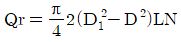
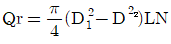
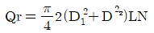
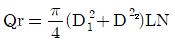
(정답률: 50%)
44. 불활성가스 아크 용접의 특징으로 틀린 것은?
- 전자세 용접이 불가능하다.
- 스패터가 적고, 열집중성이 좋아 능률적이다.
- 직류 전류를 이용하면 모재의 용입이나 비드 폭의 조절이 가능하다.
- 피복제나 용제가 불필요하고 철금속이나 비철금속까지 용접이 가능하다.
(정답률: 62%)
45. 굽힌모멘트 M, 비틀림 모멘트 T로 나타낼 때, 상당 굽힘 모멘트(Me)는 어떻게 나태내는가?
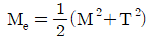
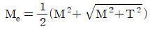
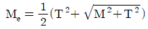
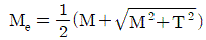
(정답률: 48%)
46. 굽힘모멘트를 받고 있는 직사각형 단면에서 최대 전단응력(rmax)과 평균 전단응력 (rmean)의 관계는?
- rmax=rmean
- rmax=1.2rmean
- rmax=1.5rmean
- rmax=2rmean
(정답률: 56%)
47. 마이크로미터의 측정 및 보관 시 유의사항에 관한 설명으로 옳지 않은 것은?
- 피측정물의 형상, 치수 , 요구 정도 등에 대해 알맞는 측정기를 선택해서 사용해야 한다.
- 피측정물 및 마이크로미터의 각 부위를 깨끗이 닦은 후 측정을 하도록 한다.
- 측정력은 0점 조정을 할 때와 피측정물을 측정할 때에도 동일하게 해야 한다.
- 마이크로미터의 주요 부위를 잘 닦은 후 앤빌면과 스핀들 면을 접촉시켜서 보관한다.
(정답률: 70%)
48. 국제단위계(SI)의 기본 단위가 틀린 것은?
- 시간 -초(s)
- 온도 -섭씨(°)
- 전류 - 암페어(A)
- 광도 - 칸델라(cd)
(정답률: 72%)
49. 다음 중 유압 액추에이터의 종류로 가장 거리가 먼 것은?
- 실린더
- 소음기
- 기어 모터
- 리니어 모터
(정답률: 66%)
50. 진동이 많이 일어나는 기계에서 나사부품이 풀리지 않게 하는 방법이 아닌 것은?
- 안장 키를 이용하는 방법
- 분할 핀을 이용하는 방법
- 로크 너트를 이용하는 방법
- 멈춤 나사를 이용하는 방법
(정답률: 60%)
51. 길이 100mm인 축 끝 저널이 300rpm으로 회전할 때 최대 베어링 하중은 약 몇 N인가?(단, 발열계수pu=0.2N/mm2ㆍm/s다.)
- 636.9
- 955.4
- 1273.2
- 15923.6
(정답률: 31%)
52. 두 축이 서로 평행하지도 교차되지도 않는 기어는?
- 스퍼 기어
- 베벨 기어
- 헬리컬 기어
- 하이포이드 기어
(정답률: 58%)
53. 관속을 흐르는 액체의 유속을 갑자기 변화 시켰을 때 심한 압력변화를 일으키는 현상은?
- 공동현상
- 맥동현상
- 수격현상
- 충격현상
(정답률: 63%)
54. 다음 중 마찰계수가 극히 작아서 효율이 높으며,백래시를 작게 할 수 있어서 NC 공작 기계의 이송나사 등 정밀한 운동이 요구되는 곳에 주로 사용하는 나사는?
- 볼 나사
- 둥근 나사
- 삼각 나사
- 톱니 나사
(정답률: 60%)
55. 판재를 사용하여 탄피, 주전자 등을 제작할 때 사용되는 인발은?
- 관재 인발
- 선재 인발
- 딥 드로잉
- 롤러 다이법
(정답률: 60%)
56. 나사 머리모양이 접시모양일 때 볼트의 머리 부분이 가공물 안으로 묻히도록 테이퍼 원통형으로 절삭하는 가공은?
- 리밍
- 태밍
- 드릴링
- 카운터 싱킹
(정답률: 64%)
57. 연강 등의 재료에서 고온이 되면 하중이 일정 하여도 변형률이 증가하는 현상은?
- 크리프
- 열 응력
- 피로 한도
- 탄성 응력
(정답률: 61%)
58. 스프링의 처짐량 δ를 구하는 식은? (단, 코일스프링의 감긴 수=n, 전단탄성률=G, 스프링 하중=W, 소선의 지름=d, 코일 직경=D)
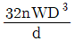
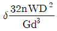
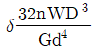
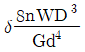
(정답률: 41%)
59. 주조품 제조 시 주물의 형상이 대형으로 구조가 간단하고 점토로 채워서 만들며 정밀한 주형 제작이 곤란한 원형은?
- 잔형
- 회전형
- 골격형
- 매치 플레이트형
(정답률: 66%)
60. 양은(german silver)이라 부르는 비철 금속은?
- Cu-Ni계 합금
- Cu-Zn계 합금
- Cu-Sn-Ni계 합금
- Cu-Ni-Zn계 합금
(정답률: 57%)
4과목: 전기제어공학
61. 다음 그림과 같은 코일저항이 r인 전압계를 이용하여 측정할 수 있는 전압이 v인데, 그림의 스위치 S를 닫으면, 그 측정범위가 바뀌게 된다. 4배의 정확도로 전압을 측정할 때rm값은 얼마인가?
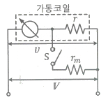
- 3r
- 2r
- r
- r/3
(정답률: 46%)
62. 미리 정해진 프로그램에 따라 제어량을 변화시키는 것을 목적으로 하는 제어는?
- 정치제어
- 추종제어
- 비례제어
- 프로그램제어
(정답률: 71%)
63. 오버슈트를 감소 시키고, 정정 시간을 적게 하는 효과가 있으며 잔류편차를 제거하는 작용을 하는 제어 방식은?
- P제어
- PI제어
- PD제어
- PID제어
(정답률: 57%)
64. 서보기구 제어에 사용되는 검출기기가 아닌것은?
- 싱크로
- 전위차계
- 전압검출기
- 차동변압기
(정답률: 35%)
65. 조절부와 조작부로 이루어진 곳으로 동작신호를 조작량으로 변환하는 것은?
- 출력부
- 비교부
- 제어대상
- 제어요소
(정답률: 51%)
66. 제어오차의 변화속도에 비례하여 조작량을 조절하는 제어동작은?
- 비례제어동작
- 미분제어동작
- 적분제어동작
- 비례 적분 미분제어동작
(정답률: 41%)
67. 그림과 같은 신호흐름선도에서 전달함수 C의 값은?
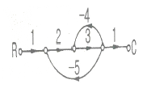
- -6/41
- 6/41
- -6/43
- 6/43
(정답률: 46%)
68. 공정제어(프로세스 제어)에 속하지 않는 제어량은?
- 온도
- 압력
- 유량
- 방위
(정답률: 67%)
69. RLC회로의 조합 중 다음과 같은 조건을 만족시키지 못하는 것은?
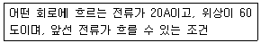
- RL병렬
- RC병렬
- RLC병렬
- RLC직렬
(정답률: 45%)
70. 특성 방정식이 복원중+2s2+3s+4=0 일 때 이계통의 설명으로 옳은 것은?(정확한 문제내용을 아시는분께서는 오류 신고를 통하여 보기 내용 작성 부탁드립니다.)(문제 오류로 정답은 1번입니다.)
- 안정하다.
- 불안정하다.
- 알 수 없다.
- 조건부 안정하다.
(정답률: 64%)
71. X=3Ω, XL=3Ω, R=5Ω고 R-L-C직렬이 합성 임피던스는몇 Ω인가?
- 3
- 5
- 5.67
- 6.56
(정답률: 50%)
72. 3상 유도전동기의 속도제어방법으로 사용되는 것이 아닌것은?
- 슬립의 변화에 의한 방법
- 용량의 변화에 의한 방법
- 극수의 변화에 의한 방법
- 주파수의 변화에 의한 방법
(정답률: 54%)
73. 목표값이 다른 양과 일정한 비율 관계를 가지고 변화하는 경우 사용하는 제어 방법은?
- 추종제어
- 비율제어
- 정치제어
- 프로그램제어
(정답률: 63%)
74. 주상변압기의 최대효율이 5/6부하시인 변압기의 전부하시 철손과 동손의 비 PC는?
- 0.69
- 0.83
- 1.28
- 1.44
(정답률: 32%)
75. 그림에서 스위치S의 계페에 관계없이 전전류I가 항상 30A라면 저항 r3, r4의 값은 몇인가?
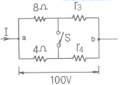
- r3=1, r4=3
- r3=2, r4=1
- r3=3, r4=2
- r3=4, r4=4
(정답률: 61%)
76. 변압기에 대한 다음의 관계식 중 틀린 것은?
- 규약효율=(입력-손실)/입력
- 부하손=저항손+표유부하손
- 전일효율=1일중의변압기입력/1일중의변압기출력
- 전압변동률=(2차무부하전압-2차정격전압)/2차정격전압
(정답률: 56%)
77. 전자력과 전자유도 등 자기회로에 대한 설명 중 틀린 것은?
- 자력선은 N극으로부터 S극으로 향하는 것이 자력선 성질의 원칙이며 자력선 방향은 오른 나사법칙에 의한다.
- 단위 시간에 대한 자속의 변화량이 기전력을 나타내는 것을 전자유도법칙이라 하며 패러데이법칙이 이에 속한다.
- 어떤 코일에 흐르는 전류가 변화하면 코일과 쇄교하는 자속이 변화하므로 이 코일에 기전력이 유도 되는 것을 자기유도라 한다.
- 자계 안에 놓여 있는 도선에 전류가 흐를 때 도선이 받는 힘의 방향은 플레밍의 오른속법칙에 의거해서 동작되게 된다.
(정답률: 48%)
78. 그림과 같은 전자릴레이회로는 어떤 게이트 회로인가?
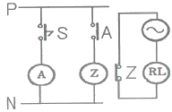
- OR
- AND
- NOR
- NOT
(정답률: 39%)
79. 전기식 조작기기에 해당하지 않는 것은?
- 전자밸브
- 펄스 전동기
- 서보 전동기
- 다이어프램 밸브
(정답률: 58%)
80. 그림과 같이 500kΩ의 가변저항기에 병렬로 저항 R을 접속하여 합성저항을 100kΩ으로 만들려고 한다. 저항 R을 몇 kΩ으로 하면 되는가?
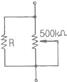
- 100
- 125
- 200
- 250
(정답률: 50%)